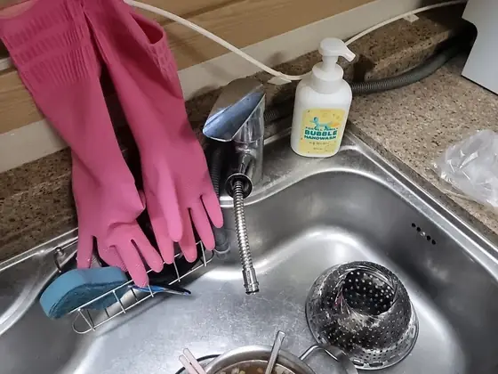
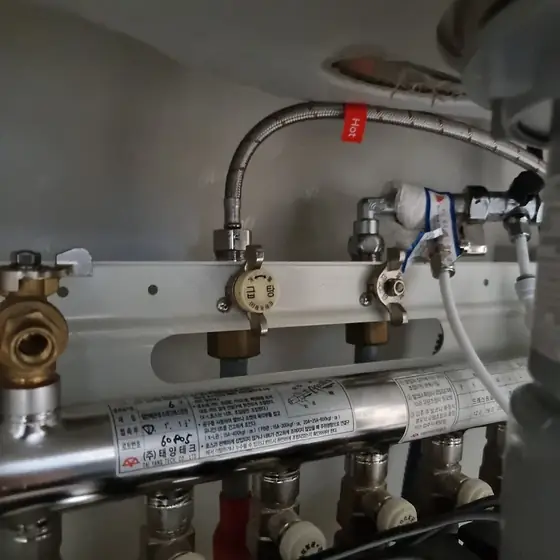

BEFOREAFTER성남 오래된 싱크대 수도 수전 철거 후 새 제품 설치 과정
- 작업 전
- 처음 확인했을 때에는 기존 수전이 싱크볼 중앙에 설치되어 있었습니다. 수전에는 인출식 호스가 연결되어 있었지만 고장이 발생해 정상적으로 사용하기 어려운 상태였습니다.
- 작업 내용
- 기존 수전 상태 확인 → 하부 급수 연결부 확인 → 기존 수전 철거 → 새 수전 설치 → 급수 연결 및 최종 점검
- 작업 완료
- 작업 전에는 기존 수전의 고장으로 인해 물을 사용하는 데 불편함이 있었습니다. 기존 제품을 철거하고 새 수전으로 교체하면서 싱크볼에서 다시 편하게 물을 사용할 수 있게 되었습니다.
- 마무리
- 수전은 매일 사용하는 설비인 만큼 작동이 뻑뻑하거나 호스가 손상되고 연결부에서 물이 보인다면 불편한 상태로 계속 사용하기보다 원인을 확인해보는 것이 좋습니다.